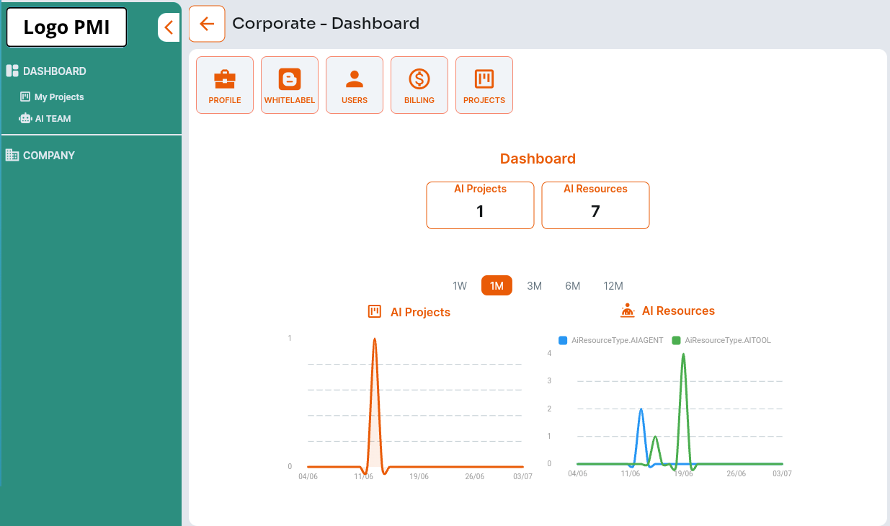

Startup
€866/mese
- 12 Ore consulenza/mese
- 5.000 Crediti (Servizi e Token AI)
- 10% Sconto Pacchetti Extra Ore/Crediti
Trasforma AI (Intelligenza Artificiale)
in un asset strategico aziendale
Non è un problema di tecnologia. È un problema di competenze e fiducia — quelle che la tua PMI non deve costruire da sola.
Sai che devi portarla in azienda, ma manca chiarezza sul perché e su cosa farci davvero.
Il team teme di essere sostituito o non sa come integrare l'AI nel proprio lavoro quotidiano.
Troppe possibilità, nessuna priorità chiara su dove far partire l'adozione.
Difficile stimare cosa guadagni davvero rispetto a quanto investi.
Non è chiaro come i costi vengano coperti né come diventino un acceleratore di ricavi.
Dal 2 agosto 2026 ogni PMI che usa un agente AI — anche solo un chatbot — diventa deployer, con obblighi di trasparenza e gestione dati non più rimandabili: scadenze già fissate, sanzioni concrete per chi non si adegua.
Chi in azienda usa sistemi AI deve avere un livello adeguato di competenza, documentato — obbligo già in vigore.
Chi interagisce con un tuo chatbot o agente AI deve saperlo: la disclosure non è opzionale.
Ogni fornitore che tratta dati della tua azienda per conto tuo richiede un accordo di trattamento dati in regola.
I trattamenti che passano da sistemi AI vanno riportati in informativa, con basi giuridiche corrette.
Serve traccia documentata di quali agenti usi, su quali dati, e con quale supervisione umana.
Sanzioni fino al 7% del fatturato globale per i sistemi ad alto rischio non conformi, esclusione da bandi e forniture pubbliche o aziendali, oltre all'esposizione legale diretta per danni causati da sistemi AI non controllati.
Agenti AI trasparenti e documentati, dati trattati in regola, obblighi di disclosure rispettati: la conformità diventa un requisito che sempre più bandi e forniture ti chiederanno per lavorare con te.
Portiamo l'AI dentro i tuoi processi reali, non un tool isolato da qualcun altro.
Comunicazione diretta, senza gergo tecnico: capisci sempre cosa stai decidendo.
Non un tecnico AI: un consulente di business e processo, competente in intelligenza artificiale.
Sempre aggiornato sulle evoluzioni normative europee in materia di compliance AI.
Supporto formativo e collaborativo, insieme a una rete di esperti verticali.
Monitoraggio costante di costi e performance dei tuoi agenti AI.
Risultato indicativo per le PMI che adottano questo modello:
La piattaforma aziendale per i dipendenti dove gestire le risorse AI.

Ogni utente che accede alla piattaforma e alle risorse AI è coperto da compliance GDPR e AI Act.
Gestione dei progetti AI dall'idea alla messa online.
Configurazione di tool, dati e frontend delle risorse AI (agenti).
Frontend web, mobile e integrazione via API, con disclosure AI conforme all'AI Act: i tuoi clienti sanno sempre quando stanno interagendo con un agente.
Dashboard con dati e grafici delle performance e costi chiari di ogni singolo agente.
Gestione della relazione tra il personale aziendale e le risorse AI.
Consulente e Uso AI tutto in un piano mensile continuativo e scalabile.
€866/mese
€1.268/mese
€2.425/mese
Le ore di consulenza non utilizzate non scadono: restano cumulabili nei mesi successivi.
Ogni PMI che usa un agente AI — anche solo un chatbot — diventa deployer secondo l'AI Act, con obblighi di trasparenza, documentazione e gestione dati che si sommano a quelli già previsti dal GDPR. I rischi principali per chi non si adegua sono sanzioni fino al 7% del fatturato globale, l'esclusione da bandi e forniture che richiedono fornitori AI Act-ready, ed esposizione legale diretta per danni causati da sistemi AI non controllati.
Dal 2 agosto 2026 l'AI Act europeo si applica anche ai sistemi conversazionali più semplici: se il tuo chatbot interagisce con clienti, sei un deployer con obblighi di trasparenza (art. 50) da rispettare, indipendentemente dalle dimensioni della tua PMI.
Rischi sanzioni fino al 7% del fatturato globale, l'esclusione da bandi e forniture pubbliche o aziendali che richiedono fornitori AI Act-ready, ed esposizione legale diretta per danni causati da sistemi AI non controllati.
I consulenti AI sono professionisti che affiancano la tua PMI nell'adozione dell'intelligenza artificiale: non vendono un tool, ma progettano, implementano e monitorano gli agenti AI nel tempo, parlano la lingua del business e garantiscono la conformità GDPR e AI Act. Per una PMI sono importanti perché permettono di adottare l'AI senza dover costruire competenze interne da zero, riducendo rischi legali e tempi di attivazione.
Un'agenzia sviluppa software su specifica e poi si ferma. Un consulente AI progetta, implementa e monitora gli agenti nel tempo, parla la lingua del business, gestisce la relazione con la piattaforma e garantisce la conformità normativa — un accompagnamento continuativo, non un progetto una tantum.
Cerca chi è certificato dalla community di consulenti AI, ha esperienza reale nel tuo verticale di mercato, e offre un modello di accompagnamento continuativo con monitoraggio di costi e performance — non solo l'installazione di un tool.
È il tuo AI Workspace aziendale: un portale dove gestisci progetti AI, risorse (agenti), team interno e compliance, con il tuo brand — senza dover costruire un'infrastruttura da zero.
Sì: il frontend degli agenti è integrabile in qualsiasi piattaforma web, mobile o tramite API, senza vincolarti all'interfaccia standard.
Dalla dashboard della piattaforma: dati e grafici chiari sui costi e le performance di ogni singolo agente, in tempo reale.
A partire da €866/mese (piano Startup), con 12 ore di consulenza incluse e 5.000 crediti piattaforma al mese. I piani superiori (Business, Corporate) scalano ore, crediti e sconti sugli extra.
Il piano ha una durata di 12 mesi, scalabile direttamente in piattaforma, con recesso possibile su richiesta.
Puoi acquistare pacchetti extra di ore di consulenza e crediti piattaforma, con uno sconto dedicato (10/15/25% a seconda del piano) rispetto al prezzo standard.